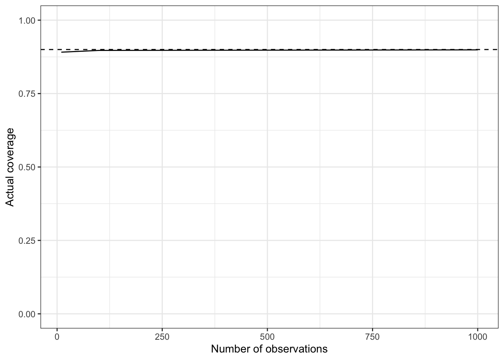

We will give a two-part answer: first, answering the above question for well-specified models (this page), then, for mis-specified models (next page).
Bayesian calibration
Thought experiment: what if a certain Bayesian inference method was used many times?
For example, different labs, each studying similar but different datasets,
i.e., they are replicating an “experiment.”
This leads to a frequentist analysis of Bayesian procedures—a very useful thing to do!
Calibration of credible intervals: a 90% credible interval is calibrated if it contains the true parameter 90% of the time.
What do we mean by “true parameter”?
Start with a joint distribution, \(p^\star(x, y)\), which we will call “nature.”
For each “experiment”: use \(p^\star\) to simulate both a true parameter, \(x^\star\), and an associated dataset \(y^\star\): \((x^\star, y^\star) \sim p^\star\). (\(=\) perform forward simulation).
What do we mean by “90% credible interval”? A function \(C(y) = [L(y), R(y)]\) which:
computes the posterior \(\pi(\cdot | y)\), and
selects left and right end points, \(l\), \(r\) such that \(\int_l^r \pi(x | y) \mathrm{d}x = 0.9\).
generate synthetic data \((x^\star, y^\star) \sim p^\star\)
compute the credible \(C(y^\star)\)
record if the true parameter is in the interval, i.e. if \(x^\star \in C(y^\star)\)
Consider the limit, as numberOfExperiments \(\to \infty\), of the fraction of times the true parameter is in the interval
If the limit is equal to 0.9 we say the credible interval is calibrated (great!)
If the limit is close to 0.9 we say the credible interval is approximately calibrated (that’s not too bad)
If the limit is higher than 0.9, we say the credible interval is over-conservative (that’s not too bad)
If the limit is lower than 0.9, we say the credible interval is anti-conservative (bad!)
Well-specified vs mis-specified models
There are two joint distributions involved in the thought experiment
\(p^*\), used to generate data
\(p\), used internally by the credible interval procedure to define a posterior \(\pi(x | y) \propto p(x, y)\)
We can consider the following setups
Well-specified setup \(p^* = p\)
Mis-specified, \(p^* \neq p\)
For now: focus on the well-specified setup.
Numerical exploration
Using the discrete model for Delta launches from Exercise 2, we will now implement and run the algorithm described above under “What do we mean by 90% of the time?”…
What do you expect?
calibrated for small data, calibrated for large data
not calibrated for small data, calibrated for large data
only approximately calibrated for both small and large data
none of the above
Code
suppressPackageStartupMessages(require("ggplot2"))suppressPackageStartupMessages(require("dplyr"))suppressPackageStartupMessages(require("tidyr"))theme_set(theme_bw())high_density_intervals <-function(alpha, posterior_probs){ ordered_probs = posterior_probs[,order(posterior_probs[2,], decreasing =TRUE)] cumulative_probs =cumsum(ordered_probs[2,]) index =which.max(cumulative_probs >= (1-alpha))return(ordered_probs[,1:index, drop=FALSE])}rdunif <-function(max) { return(ceiling(max*runif(1))) } # unif 1, 2, .., maxposterior_distribution <-function(prior_probs, n_successes, n_trials){ K <-length(prior_probs)-1# K+1 values that your p can assume n_fails <- n_trials - n_successes p <-seq(0, 1, 1/K) posterior_probs <-# 1. this computes gamma(i) prior_probs *# - pr. for picking coin (prior) (=1/3 in picture) p^n_successes * (1-p)^n_fails # - conditional for the flips posterior_probs <- posterior_probs/sum(posterior_probs) # 2. normalize gamma(i) post_prob <-rbind(p, posterior_probs)return(post_prob)}set.seed(1)K <-1000prior_used_for_computing_posterior <-rep(1/(K+1), K+1) # Use same prior for simulation and posterior computationn_repeats <-1000alpha <-0.1hdi_coverage_pr <-function(n_datapoints) { n_inclusions <-0for (repetition inseq(1:n_repeats)) { i <-rdunif(K +1) -1# Always generate the data using a uniform prior true_p <- i/K x <-rbinom(1, n_datapoints, true_p) post <-posterior_distribution(prior_used_for_computing_posterior, x, n_datapoints)# This if is just a hacky way to check if true parameter is in the HDI credible intervalif (sum(abs(true_p -high_density_intervals(alpha, post)[1,]) <10e-10) ==1) { n_inclusions <- n_inclusions +1 } }return(n_inclusions/n_repeats) # Fraction of simulation where the true parameter was in interval}df <-data.frame("n_observations"=c(10, 100, 1000))df$coverage_pr <-sapply(df$n_observations, hdi_coverage_pr)ggplot(data=df, aes(x=n_observations, y=coverage_pr)) +ylim(0, 1) +xlab("Number of observations") +ylab("Actual coverage") +geom_hline(yintercept=1-alpha, linetype="dashed", color ="black") +geom_line()

Click for answer
Suprise!!: in a Bayesian well-specified context, calibration holds for all dataset sizes!
Contrast this with typical frequentist intervals, where approximate calibration is only achieved for large enough dataset size.
This is because frequentist intervals need to rely on asymptotics to be computable (Central Limit Theorem).
Mathematical underpinnings
Denote the data by \(Y\).
Parameter of interest: \(X\).
Denote the credible interval obtained from \(y\) by \(C(y)\).
We want to show \(\mathbb{P}^*(X \in C(Y)) = 0.9\).
By construction, the interval \(C(y)\) satisfies, for all observed data \(y\), \(\mathbb{P}(X \in C(y) | Y = y) = 0.9\).